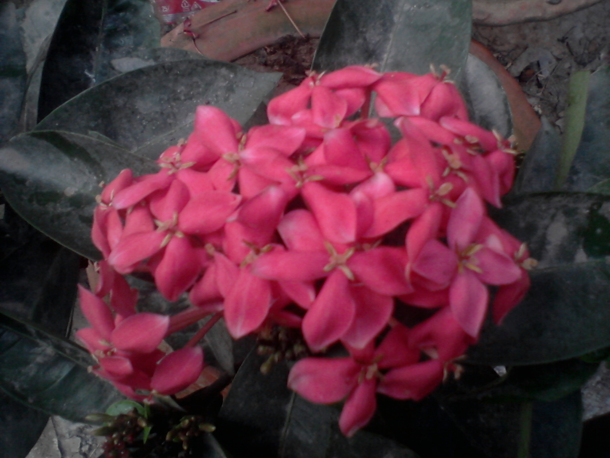
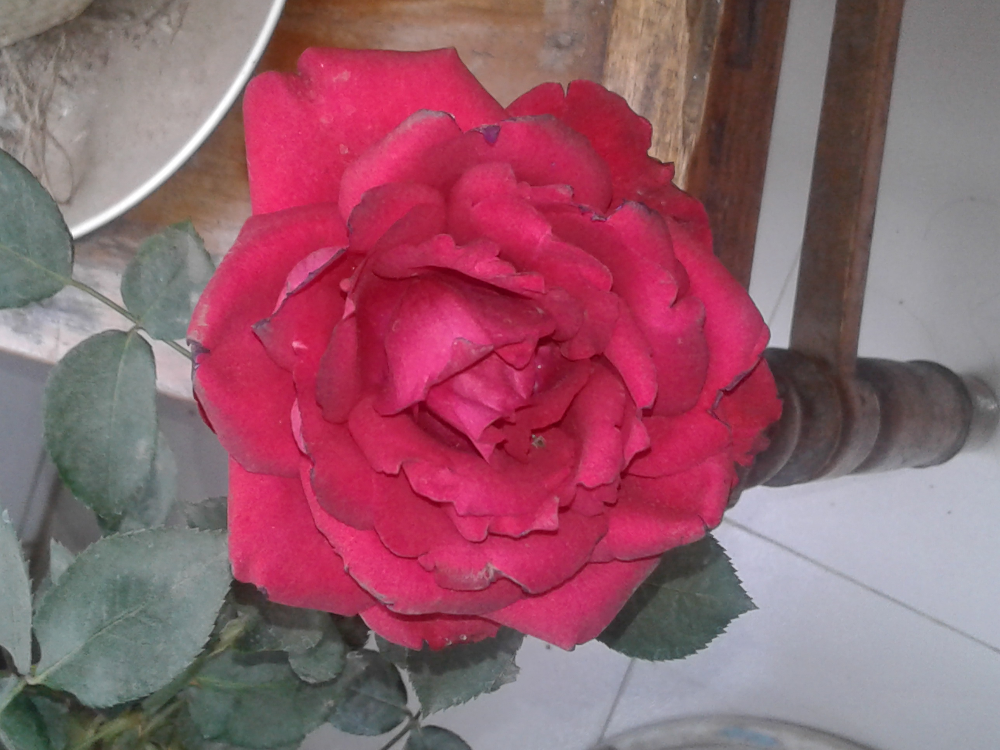

Flowers are one of the most beautiful creation of nature.There are varity of colours avaialbe in flowers.Flowers blooms in every season and each season has its own flower varities.
Some flowers blooms in the morning ,some in the night.There is also some flowers that blooms once in a numeric destence of time like in a year,in a decay even in a century.
 We can see red, blue, yellow, orange, white, black, purple, pink, muiltycoloured even green coloured flowers in the world. Some are rare and others are visuable in all over the world.
Every flower have many varities in colours and in nature.Roses are the most beautyful flower in them all.Roses has so many varities in every country in the world.And so on others.
Flowers are used for cultivate as fruits,nectur,food,medicinal properties.Bees and other incets use them as food source for them.Humans use them as medicine,tea,decoration,perfume etc.